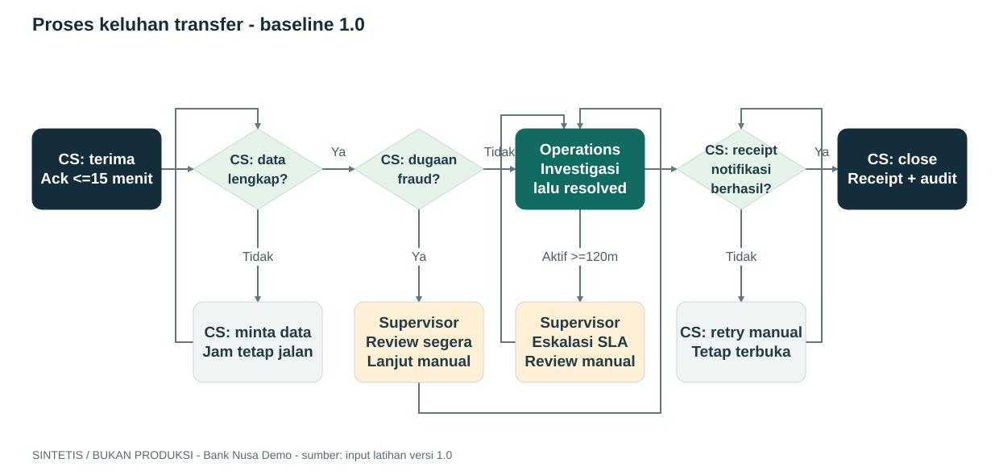
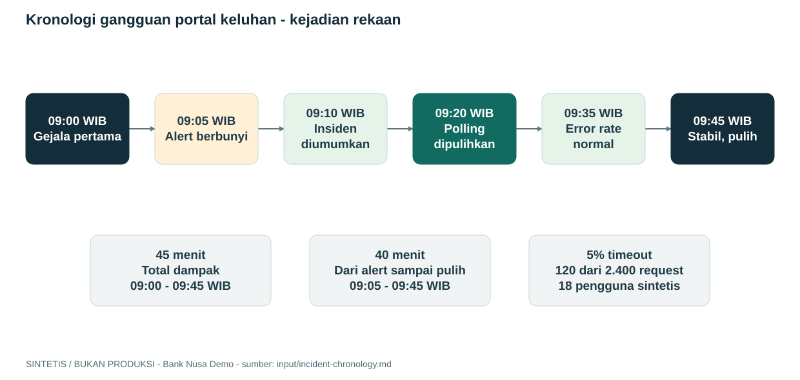

Setelah persiapan sekali selesai, ikuti tiga langkah ini. Pilih demo mana saja; tidak harus berurutan.
1
Buka folder starter
Di VS Code: File → Open Folder → pilih starter dari paket ini.
2
Buka Copilot Chat, pilih Agent
Mode ini bisa membaca bahan dan membuat file. Bukan mode Ask.
3
Salin prompt demo, paste, lalu Enter
Copilot mengerjakan sampai file jadi. Klik Izinkan jika diminta menjalankan tool, lalu buka hasilnya.
Tombol Salin di halaman ini hanya menyalin teks. Prompt tetap dijalankan di Copilot Chat. Hasil biasanya di output; laporan gangguan di docs\postmortems. Copilot memberi linknya. Lihat ringkasan skill yang dipakai.
MAU COBA YANG MANA?
Satu prompt untuk tiap demo.
Dokumen dan slide jadi file, bukan cuma jawaban chat
Lebih dari jawaban chatHasilnya file yang bisa dibuka dan dicek.
Catatan fasilitator
Mulai dari masalah operasional, bukan instalasi. Tunjukkan tiga output contoh terlebih dahulu. Tegaskan: GitHub Copilot di VS Code, bukan Microsoft 365 Copilot.
CARA INSTALL / DARI DOWNLOAD SAMPAI SIAP DIPAKAI
Cara install skill. Download apa, lalu ke mana?
Ada tiga hal berbeda: paket workshop, skill dari Awesome Copilot, dan alat untuk membuat file. Ikuti langkah 1 sampai 5. Setelah siap, saat demo tinggal jalankan prompt.
Yang di-download
Dari mana dan isinya
Setelah download
Paket workshop
Download ZIP workshop: HTML, data dummy, prompt, contoh hasil, script setup, dan skill PowerPoint buatan workshop.
Ekstrak ZIP, lalu buka folder starter di VS Code. Tujuh skill Awesome Copilot belum ikut di ZIP ini.
7 skill Awesome Copilot
Dari repo github/awesome-copilot. Cara utama: script di langkah 3 mengunduh folder skill yang dipilih, termasuk SKILL.md, script, dan template jika ada.
Script langsung menaruhnya di starter\.github\skills. Tidak ada installer .exe khusus skill.
Aplikasi dan alat bantu
VS Code, GitHub CLI, Node.js, dan Python dari situs resminya. Library pembuat gambar, Word, dan PowerPoint diambil oleh perintah npm/pip.
Pasang aplikasinya di langkah 1. Pasang library lokal di langkah 4; tidak perlu mencari file library satu per satu.
Tidak perlu mencari skill PowerPoint di Awesome Copilot. Skill banking-executive-deck sudah ada di paket workshop. Yang diunduh terpisah dari Awesome Copilot hanya tujuh skill pada daftar di langkah 3.
✓VS Code + CopilotChat agent & akses model diizinkan
✓GitHub CLI 2.90+Unduh skill; butuh koneksi internet
✓Word / PowerPointAtau viewer kompatibel untuk review
1
Download dan install aplikasi pendukung
Kalau sudah ada versi yang sesuai, lewati instalasi ulang. Untuk Windows, unduh installer dari situs resmi berikut dan ikuti petunjuknya sesuai izin IT.
VS Code — tempat membuka folder demo. Login dengan akun yang punya akses GitHub Copilot.
GitHub CLI versi 2.90+ — menyediakan perintah gh untuk mengambil skill dari GitHub.
Node.js versi 22+ — sudah termasuk npm untuk memasang alat gambar dan Word.
Python untuk Windows versi 3.10+ — dipakai pembuat PowerPoint. Pastikan perintah python bisa dijalankan dari terminal.
Word/PowerPoint atau viewer yang kompatibel dipakai untuk membuka hasil. Tidak ada akun bank atau subscription cloud yang perlu dibuat.
2
Download paket workshop, lalu ekstrak
Klik tombol berikut, ekstrak ZIP, lalu pilih File → Open Folder → starter di VS Code. Di dalamnya sudah ada data dummy, prompt, dan .github\skills\banking-executive-deck.
node --version
python --version
gh --version
gh auth status
Jika belum login GitHub CLI, jalankan gh auth login. Setelah memasang aplikasi, tutup dan buka terminal lagi jika perintah belum dikenali.
3
Download dan pasang tujuh skill dari Awesome Copilot
Untuk cara ini, tidak perlu download ZIP Awesome Copilot sendiri. Script berikut memakai GitHub CLI untuk mengunduh folder skill, lalu memasangnya langsung di .github\skills pada starter.
Yang diambil:meeting-minutes, incident-postmortem, documentation-writer, draw-io-diagram-generator, architecture-blueprint-generator, create-architectural-decision-record, dan md-to-docx.
Download dan penempatan folder selesai dalam perintah yang sama. Script tidak menjalankan isi skill atau memasangnya secara global. Kalau versi workshop sudah ada, folder itu tidak diunduh ulang.
Ekstrak ZIP Awesome Copilot. ZIP ini berisi seluruh katalog, bukan hanya tujuh skill workshop.
Buka folder skills di hasil ekstrak. Ambil hanya tujuh folder yang namanya tercantum di atas.
Salin ketujuh folder lengkap ke starter\.github\skills. Contoh hasil: starter\.github\skills\meeting-minutes\SKILL.md.
Pertahankan folder banking-executive-deck yang sudah ada. Jangan menimpa skill lama tanpa review. Jangan hanya mengambil SKILL.md jika ada script/template pendukung.
Setelah salin manual, langsung lanjut langkah 4. Tidak perlu menjalankan script download lagi.
4
Download dan install alat pembuat gambar, Word, dan slide
Perintah di bawah mengunduh library sesuai daftar paket, lalu memasangnya lokal. npm ci mengambil renderer SVG; npm pada folder md-to-docx mengambil konverter Word; pip mengambil python-pptx untuk PowerPoint. Tidak perlu download library satu per satu dari browser.
Ekstensi draw.io membantu membuka diagram yang bisa diedit. Kalau instalasinya tidak diizinkan, gambar PNG/SVG tetap bisa dilihat.
5
Cek hasil instalasi, lalu buka Copilot
Hasil npm run check:demo seharusnya menampilkan delapan skill dan alat lokal bertanda OK. Di VS Code, buka Chat: Open Customizations → Skills untuk melihat daftar skill. Login Copilot, pilih Agent, lalu salin prompt demo dan Enter.
Halaman HTML tidak mengecek instalasi laptop secara langsung. Cek lokal juga tidak membuktikan model sudah memanggil skill. Lihat aktivitas Copilot dan izinkan tool yang memang diperlukan.
Opsional: minta Copilot mengecek daftar skill
Mau pasang satu skill saja di project lain?
Contoh ini hanya memasang skill notulen. Jalankan dari folder project yang dituju, setelah GitHub CLI siap dan Anda login. Baca sumber skill sebelum memakainya.
Folder lengkapnya masuk ke .github\skills\meeting-minutes. Jangan hanya menyalin SKILL.md jika ada script atau template pendukung. Alat tambahan bergantung pada skill yang dipilih. Skill banking-executive-deck bukan dari katalog itu; gunakan folder skill yang sudah ikut paket workshop.
Supaya jelas: tujuh skill dari Awesome Copilot, ditambah satu skill PowerPoint buatan workshop. Pembuat PowerPoint memakai python-pptx (MIT), tanpa template atau merek bank sungguhan.
CERITANYA SEDERHANA
Ada keluhan transfer. Tim perlu alur yang jelas.
Bank Nusa Demo ingin merapikan cara menangani keluhan. Kita bantu membuat panduan, gambar sistem, dan bahan rapatnya. Tidak ada uang atau rekening sungguhan.
Bank rekaan
BN
BANK NUSA DEMO
“Keluhan masuk. Siapa yang mengurus berikutnya?”
Bahan ceritanya sudah ada. Sekarang kita minta Copilot membantu menjelaskan alur dan menyiapkan dokumennya.
KASUS CONTOH12
Data lengkap dan investigasinya selesai
RESPONS AWAL TEPAT WAKTU75%
9 dari 12 · ≤ 15 menit
PENYELESAIAN > 120 MENIT5 / 12
Angka ini belum menjelaskan penyebabnya
ATURAN CONTOH YANG DIPAKAI
Pakai versi 1.0 dulu.
Respons awal dikirim paling lambat 15 menit.
Kasus yang masih aktif di menit 120 dibawa ke supervisor.
Dugaan penipuan langsung diperiksa manusia.
Tutup kasus setelah masalah selesai, hasil terkirim, dan catatan tersedia.
Simulator bank hanya membaca status transfer.
KALAU BELUM TAHU, JANGAN DITEBAK
Tulis saja “belum ditentukan”.
Siapa PIC dan kapan perbaikan dikerjakan.
Berapa biaya atau target layanan baru.
Apa penyebab pasti keterlambatan.
Apakah usulan sistem sudah disetujui.
Ini aturan latihan, bukan aturan regulator.
PETA PROSES / CONTOH REFERENSI
Satu alur, termasuk jalan yang tidak mulus.

Catatan kecil: CSV berisi 12 kasus biasa. Contoh dugaan penipuan, data kurang lengkap, dan pesan gagal kirim dijelaskan di bahan cerita. Semua waktu memakai WIB dan menit kalender, khusus latihan ini.
BAHAN SUDAH DISEDIAKAN
Tidak perlu menyiapkan data dari nol.
Lihat, salin, atau download. Semua file ini sudah ada dalam starter kit; tidak perlu dibuat ulang satu per satu.
Tidak perlu upload satu per satu. Prompt demo sudah menyuruh Copilot membaca file di folder input. Gambaran sistem dan contoh API juga hanya bahan cerita, bukan layanan bank yang sedang berjalan.
DEMO 1 / DOKUMEN DAN PROSES BISNIS
Bikin panduan kerja, sekalian diagram alurnya.
Salin prompt di bawah ke Copilot Chat mode Agent. Copilot membaca bahan dummy, membuat diagram, lalu memasukkannya ke dokumen Word.
Bahan Catatan rapat + aturan contoh + CSV→Dikerjakan Copilot Tulis, gambar, dan buat Word→Yang jadi Dokumen Word + diagram
Cukup satu prompt. Bahannya sudah ada di folder input. Anda tidak perlu menyalin data atau menjalankan perintah ekspor sendiri. Kalau Copilot meminta izin tool, cek lalu izinkan.
W
Setelah selesai, buka panduan-keluhan.docx
Copilot memberi link hasil di chat. File ada di output\demo-01, atau folder baru kalau demo sudah pernah dijalankan. Cek diagramnya benar-benar terlihat di Word.
Opsional: lihat cara kerja, perintah, dan simulasi batas waktu
1 / SUSUN DOKUMEN
Bahan mentah jadi panduan.
Prompt sudah menyebut susunan yang kita inginkan, jadi Copilot tidak perlu berhenti untuk bertanya outline lagi.
2 / GAMBAR ALURNYA
Jangan cuma alur yang lancar.
Tunjukkan juga data kurang lengkap, dugaan penipuan, lewat batas waktu, dan pesan gagal kirim.
3 / BUAT WORD
Gambarnya ikut masuk.
Copilot mengubah SVG ke PNG, lalu membuat Word. Sumber diagram tetap bisa diedit lewat draw.io.
Jangan cuma cek nama file. Buka Word dan pastikan gambarnya ada. Kalau mau mengubah alur, edit sumber .drawio; gambar di Word bukan shape yang bisa diubah satu per satu.
Bonus: coba ubah aturan jadi 90 menit
Prompt ini membuat salinan versi 1.1, bukan menimpa versi awal. Demo lain tetap memakai aturan 120 menit.
GESER DAN LIHAT ATURANNYA
Tepat 120 menit, perlu supervisor?
Ini hanya alat bantu latihan. Menggeser pilihan tidak mengubah data atau dokumen demo.
Untuk belajar lebih pelan. Versi ini sengaja dibagi: sepakati susunan dulu, baru buat dokumen. Untuk live demo, cukup pakai tab Salin prompt demo.
Angka 15 dan 120 menit di tulisan harus sama dengan diagram.
Pastikan jalur data kurang lengkap, dugaan penipuan, dan pesan gagal tetap ada.
Contoh ini hanya pembanding, bukan hasil live dari prompt yang baru dijalankan.
Catatan fasilitator
Tanyakan: “Apa bedanya resolved dengan closed?” Gunakan slider untuk batas tepat 120. Jika waktu terbatas, tunjukkan hasil referensi; jangan menyebutnya hasil peserta.
DEMO 2 / GAMBARAN SISTEM
Sistemnya seperti apa? Minta Copilot gambarkan.
Satu prompt untuk membuat ringkasan arsitektur dan tiga diagram di Word. Bisa langsung dicoba tanpa menjalankan demo pertama.
Bahan Cerita sistem + contoh API→Dikerjakan Copilot Jelaskan hubungan dan urutan kerja→Yang jadi Word + 3 diagram
Buka chat baru kalau mau. Prompt ini membaca bahan dummy sendiri. Salin ke Copilot mode Agent, lalu tunggu sampai dokumen dan diagramnya jadi.
D
Setelah selesai, buka arsitektur.docx
Hasil ada di output\demo-02, atau folder baru untuk pengulangan. Cari tiga gambar: gambaran besar, komponen sistem, dan urutan penanganan keluhan.
Opsional: kenali jenis diagram dan cara membuat file
1 / GAMBARAN BESAR
Siapa memakai sistem ini?
C4 Context memperlihatkan pengguna dan sistem lain yang terhubung. Cocok untuk menjelaskan konteks tanpa terlalu banyak detail.
2 / LIHAT BAGIAN DALAM
Bagian mana bicara ke mana?
C4 Container menunjukkan aplikasi, layanan, dan database. Sequence menunjukkan urutan pesan saat satu keluhan diproses.
3 / PISAHKAN USULAN
Belum dibangun? Sebut usulan.
Jangan menggambar komponen baru seolah-olah sudah ada. Catatan keputusan arsitektur atau ADR tersedia pada latihan tambahan.
KONDISI YANG DICERITAKAN SAAT INI
Cek waktu dan kirim ulang masih manual.
Aplikasi memakai service, database, simulator, dan alat kirim pesan contoh. Belum ada scheduler atau outbox.
→
USULAN, BELUM DISETUJUI
Pengecekan dan kirim ulang otomatis.
Scheduler membantu mengecek umur kasus. Outbox menyimpan antrean kirim. PIC, biaya, dan tanggal pengerjaan belum ditentukan.
Ini gambar sistem rekaan. Kita tidak menjalankan API atau membaca kode aplikasi bank nyata. Jelaskan berdasarkan bahan yang diberikan, bukan menebak komponen tambahan.
Latihan tambahan. Buat dokumen lebih rinci, lalu catat pilihan desain dan plus-minusnya dalam ADR. Untuk demo singkat, tab pertama sudah cukup.
Di kondisi saat ini, scheduler belum ada. Jangan sampai tergambar sebagai komponen yang sudah berjalan.
Browser tidak langsung ke database. Simulator core hanya membaca status.
Kalau mencoba ADR, baca juga kekurangan tiap pilihan, bukan cuma manfaatnya.
Catatan fasilitator
Tanyakan: “Dari mana kita tahu komponen ini ada?” Jawaban harus merujuk fixture, bukan kebiasaan arsitektur modern. Bedakan diagram C4 dengan cloud deployment diagram.
DEMO 3 / BAHAN PRESENTASI UNTUK PIMPINAN
Bahannya sudah ada. Jadikan 8 slide.
Minta Copilot membuat file PowerPoint, lengkap dengan angka dan diagram. Tidak perlu menjalankan demo lain dulu.
Bahan Cerita bank + CSV + arahan presentasi→Dikerjakan Copilot Pilih isi dan buat slide→Yang jadi PowerPoint 8 slide
Salin, paste, lalu Enter. Prompt ini meminta file PPTX sampai jadi, bukan cuma daftar isi slide. Kalau tool meminta izin, cek lalu izinkan.
P
Setelah selesai, buka presentasi.pptx
Hasil ada di output\demo-03, atau folder baru untuk pengulangan. Buka di PowerPoint untuk mengecek tulisan dan diagram; bentuk diagramnya bisa diedit.
Opsional: lihat cara kerja dan perintah pembuat slide
1 / PILIH PESAN
Jangan masukkan semua tulisan.
Copilot mengambil poin penting dari bahan: masalahnya apa, angkanya berapa, dan keputusan apa yang dibutuhkan.
2 / BUAT FILE
Bukan cuma teks jawaban.
Copilot menyusun isi slide, lalu menjalankan alat lokal untuk membuat PPTX. Diagramnya memakai bentuk PowerPoint yang bisa diedit.
3 / CEK SLIDE
Buka sebelum ditampilkan.
Pastikan tidak ada teks kepotong, diagram terlalu kecil, atau angka tanpa sumber.
PowerShell · render hasil lab peserta
npm run deck -- --spec output\deck-spec.json --out output\executive-brief.pptx
Cek generator dulu dengan spesifikasi contoh
Perintah ini hanya smoke check tooling. Bukan hasil analisis AI atau pengganti lab peserta.
Contoh bawaan, nama output terpisah
npm run deck -- --spec input\deck-spec.json --out output\contoh-awal.pptx
Skill PowerPoint ini dibuat untuk workshop. Bukan dari Awesome Copilot atau produk resmi Microsoft. Tampilannya netral, tanpa merek bank. Untuk mengulang, gunakan nama file baru.
Versi latihan lengkap. Prompt ini memakai hasil dokumentasi dan arsitektur dari latihan bertahap. Kalau hanya ingin demo singkat, gunakan prompt pada tab pertama.
Untuk yang ingin tahu format data pembuat slide
CONTOH YANG SUDAH DISIAPKAN8 SLIDE · 16:9 · BISA DIEDIT
1 / 8Ini gambaran isi. Buka PPTX untuk melihat tampilan aslinya.
Diagram proses dan arsitektur benar-benar ada, bukan diganti daftar poin.
Angka 75% dijelaskan sebagai 9 dari 12 kasus, bukan angka tanpa asal.
Contoh ini sudah disiapkan sebelumnya. Hasil prompt Anda bisa berbeda.
Catatan fasilitator
Tanyakan: “Keputusan apa yang diminta?” Bedakan kecepatan membuat slide dari ketepatan pesan. Buka file PPTX, lalu tunjukkan bahwa shape diagram dan teks bisa diedit.
DEMO 4 / UNTUK TIM BISNIS DAN OPERATIONS
Catatan rapat berantakan? Jadikan notulen yang jelas.
Bahannya sudah ada: rapat rekaan tentang penanganan keluhan. Minta Copilot memisahkan keputusan, daftar tugas, PIC, tenggat, dan hal yang masih menggantung.
Bahan Obrolan rapat 30 menit→Skill meeting-minutes + md-to-docx→Yang jadi Notulen Word + 4 tugas
Satu prompt, langsung ke file. Pilih Agent di Copilot Chat, salin prompt ini, lalu Enter. Tidak perlu menjalankan demo lain atau menyiapkan transkrip sendiri.
W
Setelah selesai, buka notulen.docx
Hasil ada di output\demo-04, atau folder baru untuk pengulangan. Cek empat tugas: Raka, Mira, Danu, dan Ika. Jangan sampai budget dan jadwal implementasi yang belum dibahas malah tertulis sebagai keputusan.
CONTOH BAHAN MENTAHNYA
“Raka, draft-nya tanggal 22 ya.”
Lila membagi empat tugas. Mira diminta menyiapkan contoh pesan; Danu membuat checklist. Ika membandingkan pilihan desain. Budget dan target layanan baru belum diputuskan.
Lihat catatan rapat lengkapYANG DITUNJUKKAN SAAT DEMO
Bukan cuma meringkas percakapan.
Keputusan terpisah dari ide yang baru dibicarakan.
Tugas punya PIC dan tenggat yang memang disebutkan.
Rapat 09:00 WIB ditulis juga sebagai 02:00 UTC, bukan 09:00 UTC.
Tugas menyiapkan draft bukan izin mengubah aplikasi.
Tunjukkan kalimat tugas di catatan mentah, lalu cocokkan dengan tabel notulen. Tanyakan: “Apakah usulan budget sudah jadi keputusan?” Seharusnya belum. Jangan kirim notulen atau membuat issue sungguhan.
DEMO 5 / LAPORAN SETELAH GANGGUAN
Tadi sempat gangguan. Sekarang rapikan ceritanya.
Portal keluhan rekaan sempat lambat. Dari catatan kejadian, minta Copilot membuat laporan dengan timeline, dampak, penyebab dari bukti, dan tindak lanjut. Fokus memperbaiki proses, bukan menyalahkan orang.
Bahan Kronologi gangguan + angka contoh→Skill incident-postmortem + diagram + Word→Yang jadi Laporan Word dengan timeline
Ini demo menulis laporan, bukan menangani sistem. Semua tindakan di kronologi sudah terjadi dalam cerita. Copilot tidak diminta rollback, mengubah konfigurasi, atau menghubungi bank.
W
Setelah selesai, buka laporan dari link Copilot
Skill menyimpan laporan di docs\postmortems. Word-nya bernama 2026-10-21-portal-keluhan.docx, atau nama baru untuk pengulangan. Diagram timeline harus terlihat di dalamnya.
GAMBARAN KEJADIAN REKAAN
45 menit dampak, bukan 40 menit.

BAHAN SUDAH ADA
Jam kejadian dan buktinya jelas.
Catatan mencakup perubahan polling, gejala pertama, alert, mitigasi, pemulihan, dan review penyebab. Ada juga empat tindak lanjut dengan PIC rekaan.
Mulai dari satu pertanyaan: “Gangguannya berapa lama?” Bandingkan gejala pertama dengan waktu alert. Tunjukkan bahwa laporan yang rapi bisa tetap salah kalau dua durasi itu tertukar.
TAMBAHAN SETELAH DEMO
Sudah jadi? Cek dulu sebelum dibagikan.
Lihat apakah tulisan, gambar, dan angka saling cocok. Kalau ada yang perlu dikerjakan berikutnya, siapkan catatan atau draft issue. Bagian ini opsional untuk demo singkat.
DEMO-101Dokumen
Cek panduan dan diagram
Langkah, batas waktu, dan syarat tutup kasus harus sama. Ini bahan cek, bukan tuduhan hasil peserta salah.
DEMO-102Perbaikan
Bahas pengecekan batas waktu
Otomatisasi masih usulan. Coba kasus di menit 119, 120, 121 dan kasus yang sudah ditutup.
DEMO-103Desain
Bahas pesan yang gagal terkirim
Mau diulang manual atau lewat antrean? Catat plus-minusnya dan cara mencegah pesan terkirim dua kali.
Opsional: minta Copilot mengecek hasil dan menyiapkan draft issue
Prompt ini mengecek hasil yang sudah ada dan meminta persetujuan sebelum menyimpan tindak lanjut. Sebutkan folder demo yang ingin dicek jika ada beberapa versi.
Cukup simpan di laptop. Jangan buat issue sungguhan, kirim email, atau mengakses sistem bank. Kalau nanti mau dipublikasikan, minta persetujuan terpisah dulu.
✓
SEMUA BAGIAN SUDAH DITANDAI
Selesai mencoba. Simpan hasilnya!
Anda sudah mencoba membuat file dan mengecek hasilnya. Semua tetap bahan latihan, bukan persetujuan untuk sistem bank.
Siapkan laptop sebelumnya. Saat demo, buka satu skenario, salin prompt, lalu tunjukkan file yang dibuat Copilot. Penjelasan teknis boleh menyusul kalau ditanya.
115 MENIT / COBA SEMUA
Peserta mengerjakan sendiri.
05 minTujuan dan cerita kasus
15 minPersiapan skill dan alat
05 minLihat bahan dummy
20 minPanduan kerja + diagram
20 minArsitektur + latihan ADR
15 minPowerPoint
10 minNotulen rapat
15 minKronologi dan laporan gangguan
10 minCek hasil dan tindak lanjut
45 MENIT / PILIH TIGA DEMO
Siapkan laptop sebelum tampil.
05 minCerita singkat dan bedanya skill vs prompt
10 minNotulen dari obrolan rapat
12 minLaporan gangguan + timeline
12 minPilih: Word + diagram, arsitektur, atau slide
06 minBuka hasil, cek, dan diskusi
Ini perkiraan, bukan jaminan waktu model. Tidak harus mencoba semua skenario atau bonus perubahan aturan dalam satu sesi.
COBA SEBELUM TAMPIL
Jangan habiskan sesi untuk instalasi.
Cek kesiapan laptop
Jalankan npm run check:demo dari starter. Pastikan Copilot bisa dipakai dan file contoh bisa dibuka.
Coba satu prompt sampai selesai
Pilih satu demo. Jalankan di chat baru, izinkan tool yang diperlukan, lalu buka file hasilnya. Waktu pembuatan bisa berbeda-beda.
Simpan contoh untuk cadangan
Kalau jaringan atau model bermasalah, buka tab Lihat contoh hasil. Bilang dengan jelas bahwa itu contoh yang sudah disiapkan.
Troubleshooting cepat
Skill tidak muncul
Buka starter sebagai workspace. Periksa nama folder dan SKILL.md. Buka Open Customizations; reload window bila diperlukan. Jangan menganggap discovery sama dengan invocation.
GitHub CLI tidak punya perintah skills
Gunakan versi 2.90+ atau salin folder lengkap dari commit sumber secara manual, sesuai izin IT.
Gambar Word hilang
Pastikan PNG ada dan path relatif dari Markdown benar. Placeholder tidak dianggap lulus.
Generator menolak file output
Gunakan nama baru. Generator sengaja tidak menimpa hasil peserta.
Copy tidak diizinkan browser
Dialog copy manual akan menampilkan teks lengkap. Tekan Ctrl+A lalu Ctrl+C di area teks.
Output AI berbeda dari contoh
Nilai berdasarkan aturan dan evidence, bukan kesamaan kata atau layout.
Yang bisa offline: membaca HTML dan membuka contoh. Memasang skill, mengunduh alat, dan memakai Copilot tetap butuh jaringan serta izin organisasi. Halaman ini tidak mengirim bahan ke layanan lain.